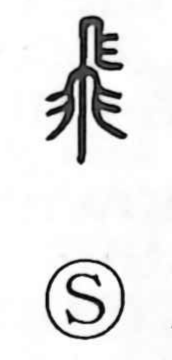

飛

Uncategorized
Kun: tobu, tobasu | On: hi
to fly ・ to soar ・ to rise ・ swift
Explanation
A pictograph of a bird in flight, wings spread wide at the instant of taking off. From this vivid image the character came to mean to fly, and by extension to rise into the air and to move with speed. It contrasts with 翔 (shō), which evokes a gentle, circling glide. In compounds it retains these senses: flight through the air (hikō), soaring (hishō), arriving by flight (hirai); upward motion, as in flames that leap up (hien) and lofty pavilions (hikaku, hirō); and swiftness or rapid conveyance, as in quickly circulated proclamations (higeki), a boat that seems to fly (hishū), and a hurried letter (hisho).